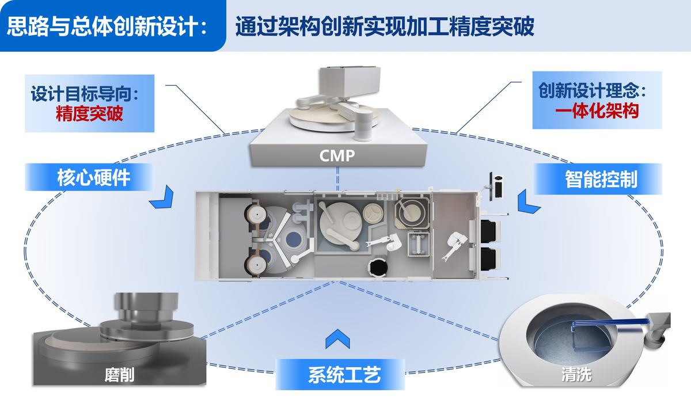

后摩尔时代，传统芯片制造方式趋近物理极限，三维集成芯片（3D IC）技术成为芯片性能突破的重要方向。3D IC工艺需在多片晶圆完成电路制作，通过键合堆叠后对背面进行高精度减薄，通常需要减薄至10 μm以下，全局厚度偏差（TTV）控制到亚微米，以实现多层堆叠与芯片可靠互连，晶圆减薄装备已成为3D IC制造最重要的工业母机之一。然而，传统的减薄装备面临精度瓶颈，难以满足3D IC最新发展要求，严重制约我国3D IC制造的自主可控。本项目跳出以单一磨削为主的传统减薄加工模式，以更高精度目标为导向，创新地提出磨削减薄-CMP-清洗一体化架构设计思路，颠覆了传统减薄加工模式，并通过核心硬件、智能控制、系统工艺等多维度创新设计，成功研制出3D IC制造用的超精密减薄装备，实现3D IC减薄加工精度突破。其主要设计创新如下：
（1）设计了磨削减薄-CMP-清洗一体化的全新减薄工艺模式，实现了跨洁净等级多系统集成。设计了按模组洁净等级串行的紧凑布局，通过多机械手协作实现了复杂工艺模块的连通；采用了跨区域预清洗、封闭腔室气流独立控制和正压洁净气流主动控制三重设计保障，有效避免了交叉污染，实现了系统集成。
（2）设计了一种在有限空间实现高刚性的半包围式主轴支撑结构，提高了磨削单元刚性与加工稳定性。设计了凹形立柱结构对主轴进行半包围支撑，通过缩短力臂减小加工过程受力变形，相较传统磨削减薄单元刚性提升约30%。基于此，设计了多模组总体高刚性磨削单元结构，大幅提升了减薄加工精度。
（3）设计了磨削-CMP联动双闭环面形智能调控系统，通过晶圆面形的两级精准调控实现精度突破。通过共享磨、抛加工后晶圆面形数据，实现在磨削和CMP加工中分别精准调控面形，全流程加工后晶圆TTV小于0.7 μm (平均0.5 μm，最优0.2 μm)，超越了硬件可达的性能极限。
（4）设计了磨-抛-洗一体化高匹配工艺，将多模块复杂工艺进行协同与融合，实现了高质高效加工。以最终能够去除损伤层且总体效率最优为原则，设计了磨-抛加工的最佳组合工艺搭配，实现了产出效率不低于14.5片/小时；采用多级清洗工艺的协同，实现表面160 nm污染物<10颗的优异清洗效果。
该项目成果是近年来我国在集成电路高端装备领域的一项重大突破，已在中芯国际、长江存储、武汉新芯等3D IC生产线通过了CIS、3D NAND、HBM等先进产品的考核验证并量产应用，累计出机及订单超20台，累计量产晶圆超12万片，获多家客户重复订单与意向订单超50台，经济和社会效益显著。获第七届集成电路创新奖产业链合作奖、中国IC风云榜年度优秀创新产品等荣誉。授权专利77项，发表高水平论文22篇。本项目成果实现了技术引领，专家鉴定认为“该项目技术难度大、创新性强，具有自主知识产权，整体技术达到了国际领先水平”，有力支撑我国先进3D IC自主可控发展。
集成电路（IC，也称芯片）是信息技术产业的核心和基石，是支撑社会经济发展和保障国家安全的基础性、战略性、先导性产业，是国际科技竞争的战略高地。高端集成电路装备是芯片制造的基础，支撑了集成电路产业的发展。
传统的IC制造工艺已发展到3-2 nm节点，进入了后摩尔时代，在平面工艺基础上通过持续缩小线宽来提升芯片集成度开始面临物理瓶颈。为了持续提升芯片的集成度和性能，三维集成发展为高性能芯片的重要方向，催生了新的芯片制造范式。三维集成芯片（3D IC）不仅使集成度的提升得以延续，更在带宽、延迟、散热等综合性能方面实现了质的飞跃。近年来，人工智能的兴起推动了3D IC的迅猛发展，预计未来市场空间有望突破万亿元。
3D IC带来技术变革的同时，也伴随着巨大挑战。3D IC中最难的晶圆到晶圆堆叠工艺要先分别在两片晶圆上完成电路制作，然后通过键合工艺将两片晶圆精确紧密贴合，再将堆叠后的晶圆背面基底材料进行高精度减薄，如图1所示，以减小芯片体积、提高堆叠密度、提升散热效率。以高带宽存储芯片（HBM）第五代技术发展为例，需要晶圆到晶圆堆叠20层，每层都要减薄，晶圆减薄装备已成为3D IC制造最重要的工业母机之一。
图1 3D IC键合、减薄工艺
晶圆减薄是一种超精密磨削加工技术，如图2所示，晶圆被吸附固定在承载台上并随承载台旋转，杯型金刚石砂轮在晶圆上方高速旋转的同时沿轴向进给，利用金刚石颗粒对晶圆进行超精密磨削，高效地去除晶圆材料。
此前，该技术主要应用于后道芯片封装领域，关键精度指标全局厚度偏差（TTV）通常在2.5 μm以上。封装领域高端减薄装备市场几乎全被日本DISCO公司垄断。
而3D IC减薄工艺需将直径300 mm的堆叠晶圆上层减薄至10 μm以下，相当于去除98%以上的材料，且要求平均TTV低至0.5 μm。为了确保多重堆叠的最终良率，每一层减薄都需要达到此面形精度且要实现高水平缺陷控制。此前，国内外均没有能够满足要求的减薄装备。
图2 晶圆减薄原理
针对新兴的3D IC领域减薄装备需求，国际龙头企业通过在传统封装减薄装备上增加简易抛光轴的改装来应对，如图3所示为DISCO公司的改装型装备示意图。然而，其改装的简易抛光结构对晶圆面形有恶化效果，不能突破精度瓶颈，无法满足3D IC最新发展要求。
图3 国外改装型设备示意
总体创新设计思路：有没有破局的其他途径？团队另辟蹊径，跳出以单一磨削为主的传统减薄加工模式，以更高精度目标为导向，创新地提出了磨削减薄-化学机械抛光（CMP）-清洗一体化架构设计思路，并通过核心硬件、智能控制、系统工艺等多维度创新设计，实现加工精度突破，如图4所示为创新思路框架。
图4 创新思路框架
系统精度提升总体设计：面对平均TTV低至0.5 μm的极限精度目标，单一的设计方案难以达成。团队提出了三方面设计规划：首先，以架构创新为突破点，整合磨削减薄和CMP两种加工工艺，使两级智能调控成为可能，通过减薄和CMP联合优化面形，可使加工精度实现跃升。其次，磨削减薄单元硬件精度进行极限提升：磨削减薄加工是一种依靠金刚石砂轮表面的磨粒去除晶圆材料的纯机械加工，其本质为高精度磨床。而机床刚度直接影响加工过程中的抗变形能力和稳定性，这对加工精度有决定性作用，如图3所示的传统磨削减薄结构采用了悬臂式主轴，该结构构型存在易变形、刚性不足的缺点，制约加工精度。因此，创新设计磨削单元构型以增强系统刚性是提升磨削减薄加工精度的直接手段。最后，精度的提升如果降低了效率，将不能满足大生产线的要求，系统工艺方面考虑进行最优工艺匹配设计，实现精度和效率的平衡。
总体工艺规划与工艺流程设计：磨削减薄分为粗磨、精磨两步工艺，如上图2所示，加工时晶圆面朝上；CMP工艺通过抛光头吸附晶圆，将晶圆加工面贴附于抛光垫上进行加工，加工时晶圆面朝下。因此，实现磨削和CMP工艺的联动要对晶圆进行翻面操作，需通过可翻面机械手实现。清洗工艺有晶圆竖直和水平等不同形式，磨削减薄和CMP工艺加工时晶圆都处于水平状态，因此优选水平清洗模式保证晶圆姿态一致。基于上述工艺特征与联动需求，设计晶圆水平姿态主导、含翻面操作的串联工艺流程，如图5所示为总体工艺流程图，过程中以精磨面形作为输入，通过智能控制软件的调控，实现加工精度的突破。
图5 总体工艺流程图
多工艺模块紧凑集成总体布局设计：磨削减薄、CMP和清洗工艺在加工模式和洁净等级要求上差异巨大，磨削减薄为后道封装级别洁净度（100,000级），CMP和清洗为前道IC制造级别洁净度（1,000-100级）；同时3D IC制造对设备尺寸有严格要求，而各工艺模块外形尺寸各异，对一体化架构的紧凑布局构成巨大挑战。为应对上述挑战，采用以下两点关键策略进行设计，一是洁净等级驱动的串行拓扑：依据工艺模块的洁净等级要求，在设备长度方向上构建串行拓扑布局，依次布置洁净级别顺序排列的“磨削减薄→CMP→清洗→EFEM”模块。二是极限空间利用与协同传输：三个工艺单元中，磨削减薄单元尺寸最大，宽度约1.6 m，需在该宽度限制内，完成CMP、清洗及各传输模块的排布，以实现最极限的宽度。在串行拓扑框架下，极限利用空间，巧妙设置多机械手协同工作，打通各工艺模块间的传输链路，成功实现了多工艺模块在紧凑空间内的集成，构建了磨削减薄-CMP-清洗一体化架构布局，如图6所示。
图6 磨削减薄-CMP-清洗一体化架构布局
基于以上总体设计创新思路，团队进行了系统性详细设计，实现了以下四大设计创新。
设计创新点一：磨削减薄-CMP-清洗跨洁净等级多系统集成设计
交叉污染防护设计：在洁净级别顺序布置的串行拓扑布局下，有效防止交叉污染是核心挑战。为此，本方案（如图7所示）创新设计了三重主动污染控制技术：1. 跨区域预清洗机制：在磨削区后及CMP区前关键位置设置预清洗，主动清除晶圆表面潜在污染物，阻断工艺间交叉污染；2. 封闭腔室气流独立控制：将四个洁净度要求高的模组（如CMP、清洗）设计为独立封闭腔室，并对各腔室内部气流进行独立精准控制，确保高洁净环境稳定且互不干扰；3. 正压洁净气流主动控制：在洁净腔室顶部设计可控正压洁净气流，该气流向下持续输出，形成主动气流屏障，有效抑制并阻挡来自磨削区污染物的扩散侵入。通过上述三重主动控制技术的协同作用，成功实现了跨洁净级别区域的污染高效抑制，有效保障了串行布局下的工艺安全与晶圆洁净度。
图7 三重主动污染控制技术
跨洁净级别传输设计：依据三个工艺单元的位置分布关系，在CMP与清洗工位中间的枢纽位置设置翻面机械手，该机械手通过两次翻面实现晶圆在CMP单元和其它单元间的传递。再依据空间尺寸约束，在单侧直线路径上设置了其它三个机械手，并根据晶圆上下料传输特点，各机械手设计为夹持或吸附或兼具两种形式的类型。通过多机械手协同传输，突破性的实现了复杂工艺流程（包含多次晶圆翻面）的全链路、自动化传输。具体流程如图8所示：通过一套22步传输序列（包含机械手对晶圆的两次翻面操作），完整执行晶圆背面的五道核心加工工艺：粗磨削（Z1）→精磨削（Z2）→化学机械抛光（CMP）→双面刷洗→干燥，实现了晶圆的干进干出。
图8 跨洁净级别传输
设计创新点二：半包围式高刚性超精密磨削减薄单元设计
半包围主轴支撑结构设计：传统磨削减薄主轴支撑结构普遍采用悬臂式设计，主轴置于立柱外侧，此结构因力臂过长导致刚性不足，磨削过程中磨削力易引发主轴俯仰变形，制约加工精度。本产品通过在立柱上设计半圆形凹陷实现立柱对主轴的半包围支撑，力臂缩短300 mm以上，显著降低主轴在磨削过程中的变形，如图9所示。
图9 主轴支撑结构对比
紧凑高刚性磨削单元设计：与传统机床单主轴布局不同，磨削减薄单元需在有限空间内集成双工位主轴系统，并精密集成于三工作台布局中，而主轴与工作台角度关系对提升TTV至关重要，该设计面临刚性维持与空间压缩的双重挑战。依托半包围主轴支撑，设计了一体V型支撑立柱同时承载两个主轴，压缩了主轴横向间距。依据两主轴分布设计了工作台相对主轴的位置关系，并据此布局了工作台角度调节支撑位置，实现磨削力与支撑结构的最佳位置分布。以圆形回转台支撑三个工作台，再通过高刚性床身实现磨削单元的高刚性支撑，如图10所示。
图10 磨削单元支撑
通过多轴轴系刚性仿真技术，构建了床身-转台-工作台-主轴的全链条高刚性磨削单元，如图11所示为磨削单元在磨削力作用下的变形仿真情况，磨削单元整体刚性高、变形小，相较传统磨削减薄单元，刚性提升约30%。
图11 磨削单元在负载下的变形
设计创新点三：磨削-CMP联动双闭环面形智能调控系统设计
磨削加工和CMP加工对晶圆面形的控制原理不同。在纯刚性磨削过程中，晶圆面形精度受到主轴位姿、主轴进给精度、晶圆承载盘支撑面的面形精度等多因素影响，依靠磨削单元硬件难以使12英寸晶圆全局厚度偏差（TTV）稳定达到1 μm内。
CMP加工精度受抛光垫、保持环等耗材寿命衰减及来料面形精度波动的影响，当前CMP技术已发展为可通过多区抛光头分区压力调控来进行晶圆面形修整。单晶圆面形结果取决于当前CMP加工的条件，若将晶圆面形的历史数据集合为数据库进行智能分析，则可掌握各因素对CMP加工效果的实时影响，进而实时调控抛光头分区压力、抛光时长等参数，实现对晶圆面形的精准调控。因此，通过设计一套智能控制软件，进行历史数据分析而实时调控抛光参数，是CMP加工精度提升的有效途径。
基于通过软件、控制实现加工精度提升的思路，本产品创新设计了磨削-CMP联合双闭环面形智能调控系统，通过共享磨抛加工后面形数据，实现磨削和CMP加工都精准调控面形，抛光后晶圆TTV小于0.7 μm (平均0.5 μm，最优0.2 μm)，超越了硬件可达的性能极限。
基于晶圆厚度在线测量系统，在精磨完成后，对晶圆面形进行量测，通过智能算法制定的补偿策略，自动调整轴间位置关系补偿面形，实现磨削单元的面形闭环控制，如图12所示。
图12 磨削面形自动补偿
精磨工序测得的晶圆面形数据实时输入至SPTC（智能工艺目标控制，Smart Process Target Control）系统，系统根据该面形数据，智能调整抛光头各区压力及抛光时长，精准修整晶圆面形。抛光完成后的晶圆，在干燥模块会再次进行面形检测并实时输入SPTC系统。SPTC以抛光后的晶圆形貌作为数据库，进行深度学习，不断迭代优化自身参数，使系统更加精准。如图13所示为SPTC原理图，由此构成了磨削-CMP联合双闭环面形智能调控。
图13 SPTC系统模型框架
设计创新点四：磨-抛-洗一体化高匹配工艺设计
设计磨-抛加工组合工艺：创新架构需要精准匹配的工艺实现其性能，团队研究了晶圆磨削亚表面损伤演化机制及CMP工艺中磨削损伤对化学反应的腐蚀促进原理，揭示了磨削减薄各工步的损伤形成规律，根据粗磨、精磨、CMP的各自工艺优势，以最终能够去除损伤层且总体效率最优为原则，设计了磨-抛加工的最佳组合工艺搭配：粗磨需将上层晶圆去除680-720 μm，精磨需去除30-50 μm，CMP需去除3 μm，如图14所示。
图14 磨-抛加工组合工艺搭配
磨-抛加工组合工艺结果：如图15所示为经过组合工艺加工晶圆表面宏观状态对比，可以看出CMP将精磨磨纹完全去除，晶圆表面呈现镜面效果，其表面粗糙度如图16所示，表面粗糙度Ra＜0.4 nm，表明CMP去除了精磨产生的亚表面损伤，改善了晶圆表面形貌。
图15 精磨加工与CMP加工晶圆表面状态对比
图16 CMP后晶圆表面粗糙度
清洗组合工艺结果：跨区域主动气流控制及模组内主动气流控制有效防止了不同工艺的交叉污染，但为了获得高洁净的表面，仍需进行接触式清洁工艺来彻底清洁晶圆表面。设计了如下串行的多级清洁工艺：通过跨区预洗毛刷进行首次清洁，再通过CMP预洗改性晶圆表面，然后通过双滚刷配合化学液彻底清洁晶圆，最后通过高速旋转甩干晶圆。通过多级清洗组合工艺，攻克了跨洁净度等级的清洗难题，获得了良好的表面洁净度，经过磨、抛、洗完整工艺后，直径大于0.16 μm的颗粒数量小于10颗，满足3D IC制造对晶圆洁净度的要求，如图17所示。
图17 组合清洗工艺及清洁效果
总体思路与创新设计总结：如图18所示为本产品总体思路与创新设计总结，通过系统的创新设计，该产品颠覆了3D IC减薄制造模式，实现了性能突破。
图18 总体思路与创新设计总结
团队自研了分布式工控系统与软件，集成多工位工艺调度、智能化控制、安全联锁、日志数据管理、报警处理、工厂自动化等功能，满足FAB自动化与智能化运行要求。研制出了三维集成芯片制造用的超精密减薄装备，产品已获得SEMI系列认证（S2、F47），达到了半导体级装备要求，如图19所示。
图19 12英寸晶圆超精密减薄装备
性能突破：凭借上述核心创新设计，超精密减薄装备实现了性能突破：晶圆上层厚度可减薄至5 μm，全局厚度偏差≤0.7 μm (平均0.5 μm，最优0.2 μm)，片间厚度偏差±0.8 μm，表面粗糙度≤0.4 nm，关键指标满足3D IC最新发展需求。
产品应用：该产品是近年来我国在集成电路高端装备领域的一项重大突破，已在中芯国际、长江存储、武汉新芯等3D IC生产线通过了CIS、3D NAND、HBM等先进产品的考核验证并量产应用，累计出机及订单超20台，累计量产晶圆超12万片，获多家客户重复订单与意向订单超50台。
产品开发期间，获授权专利77件（国内发明专利39件，实用新型专利37件，中国台湾发明专利1件），发表高水平论文22篇。产品获得第七届集成电路创新奖产业链合作奖、中国IC风云榜年度优秀创新产品等荣誉，专家鉴定认为“该项目技术难度大、创新性强，具有自主知识产权，整体技术达到了国际领先水平”。
通过创新设计，本产品取得了原创架构与核心技术的突破，关键技术指标优于国外设备，实现了多场景应用，以优异的技术能力为3D IC行业发展赋能。



3D IC 晶圆减薄至 10μm 以下、TTV 亚微米,芯片制造关键工业母机
精密装备,功能主导
支撑芯片国产化,惠及电子信息产业
打破进口依赖,芯片装备市场空间巨大
「卡脖子」攻坚的代表性装备